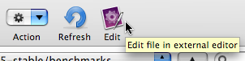
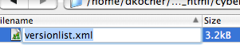
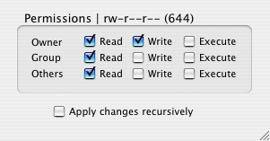
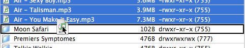

-
Com s'edita un fitxer en l'editor extern.
Podeu editar un fitxer remot com si fos un de local fent clic al botó Edita de la barra d'eines o fent clic en la opció de menú Fitxer → Edita. El fitxer es descarregarà al vostre directori temporal i s'obrirà amb el vostre editor preferit. (Els editors suportats inclouen SubEthaEdit, BBEdit, TextWrangler, TextMate, Text-Edit Plus i alguns altres). Definiu aquest editor a Cyberduck → Preferències. Cada cop que deseu els canvis del fitxer en l'editor aquest serà enviat al servidor d'on l'heu baixat. Si obriu el fitxer per editar-lo però no el deseu, aquest romandrà intacte en el servidor.
 -
Com es canvia el nom d'un fitxer?
Seleccioneu el fitxer en el navegador i premeu la tecla de retorn. Escriviu el nou nom i torneu a premer la tecla de retorn. També podeu reanomenar els fitxers amb el menú Fitxer → Informació o prement el botó Obté la informació de la barra d'eines. Introduïu el nou nom al primer camp i premeu retorn o tabulador per enregistrar els canvis.
 -
Com es canvien els permisos d'un fitxer en concret?
Seleccioneu el fitxer en el navegador i trieu Fitxer → Informació. Podeu fer múltiples seleccions de fitxers si voleu. Assegureu-vos de premer el botó Aplica per enregistrar els canvis.
 -
Puc moure fitxers en el servidor remot?
Els fitxers es poden moure tal i com ho feu en el Finder.
